Kalaw 一天比一天冷，昨天 Charles 還叫我今天要穿多點衣服才好出發。早上的確冷得好緊要，旅館接待員小姐也戴了冷帽，我最保暖的也只有一件 fleece，穿著它吃早餐時也發抖。
趁有時間，又請旅館職員安排明天行去 Inle Lake 的行程，以及訂了她推介的旅館。今次介紹給我的 Guide 是女子，她向我說的二天一夜 trip 比我預期貴很多，超出預算。每天 20 USD Guide Fee，再加交通費，由這裏乘的士去起點 15000 Kyat，可改電單車便宜點，最後由終點乘船去 Nyaungshwe 又再 15000 Kyat。我猶疑，還是今晚才決定。
司機準時到達，更為我買了面罩一個，今次包車遊 Pindaya，15000 Kyat。
他是 Charles 的朋友，祖籍尼泊爾，也是上一代來緬甸的移民，但他不是印度教徒，在這裏出生，歸信了佛教。他說前年離婚了，前妻是華人，好像是跟了別的男人走，我還以為這裏不能離婚的呢。
往 Pindaya 途中，被人截停，司機被人叫了過去，像被人教訓般，唯唯諾諾，不斷點頭，最後交出一疊錢。之後問他，原來他的電單車沒有牌，他笑說很多人也沒有牌的，因為超貴，又說那些警察的車也沒有牌呢，但卻沒事。看他剛才付的一疊 1000 Kyat，也替他肉痛，但他沒有因為這樣而不開心。
沒記錯的話，電單車由 Kalaw 到 Pindaya 約兩小時，但騎著車時間好像過得很快，去 Pindaya 當然是去 Shwe Oo Min Cave，這個洞認真美觀，從遠處就看得見它和它外面的建築。這個洞的入口前竟然還有升降機。脫下涼鞋，進入大洞，全都是不同款式的佛像，很壯觀。細看下，每尊佛像下都有字，原來是捐獻者的名字。
看完大洞，沿著山邊小徑走，走到遠處另外兩個洞，兩個洞都有很大的佛，真的很大，但我覺得很卡通，我竟然聯想到 BB 戰士和 keroro 的機械人，最遠處的一個洞有大臥佛，但途經的路很多尖石，幸好穿了厚襪。
但其實在 Pindaya 我最喜歡的是在 Shwe Oo Min Cave 前的一個 Stupa 群，進入去，像一個棋盤，很寧靜舒服，當然少不了那些鈴聲。
之後司機帶我參觀旁邊的造紙工場，很有多紙品，雨傘、燈罩、扇、簿，然後我們去喝東西，我請客，付錢時侍應沒零錢，用一支煙來找數.....，不過原來這是當地的習慣，之後也試過幾次。
在一條不知什麼村，有些老翻唱片檔，叫司機介紹了些當地歌，買了片老翻。那裏也有香港電影賣，司機說喜歡 Jacky Chan，天啊。
下午四時許，回到 Kalaw 還趕得及到郵局寄明信片，50 Kyat 一張。今天很滿意，之前還不知道如何去 Pindaya。
回到 Eastern Paradise，一問之下，沒有兩天一夜行去 Inle Lake 的 tour 了，叫我去問 Golden Lily。這間惡名遠播的 Golden Lily，我還是死去問了，一問，同價錢，一人全包 USD 70，早知今早就答應了那導遊，這時我也不去多想，乾脆答應和付錢。又在這裏換錢，1 USD 換 830 Kyat。
還只有很短時間，才真正逛 Kalaw，又吃雪糕又到一間 Fair Trade 店買東西又上山看風景，最後在小山上靜靜坐著等日落。
聖誕臨近，各酒店和 Guest House 都佈置得很「聖誕節」，但當地人其實不慶祝聖誕的。
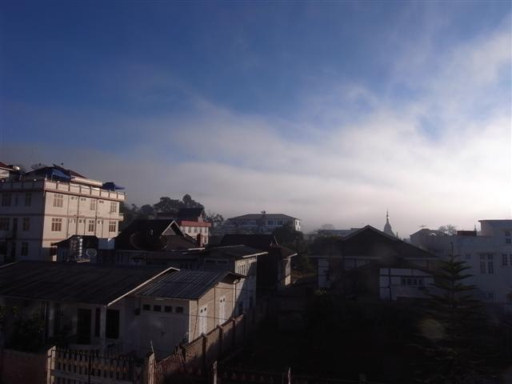
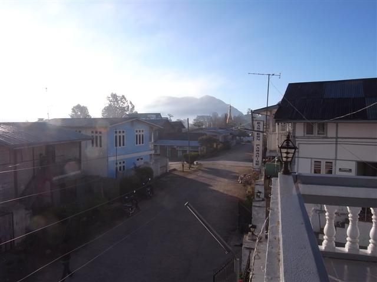
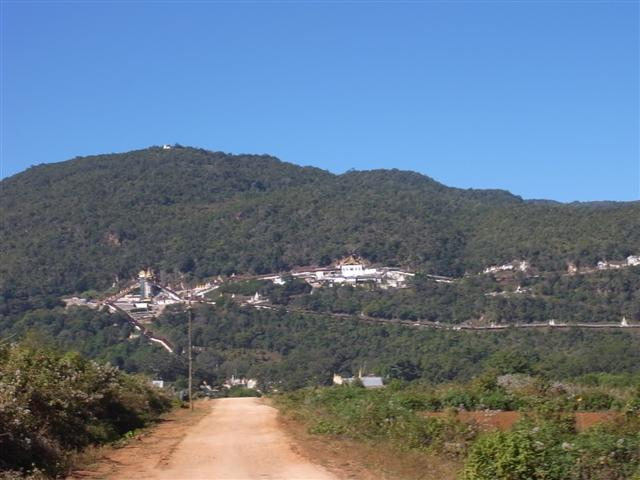
Shwe Oo Min Cave
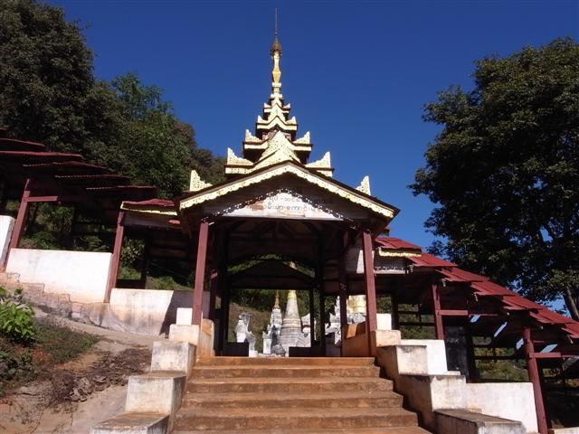
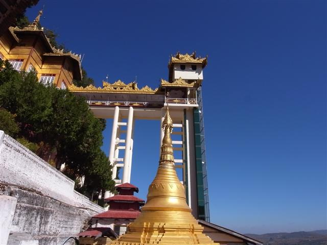
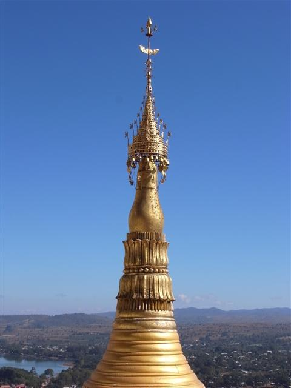
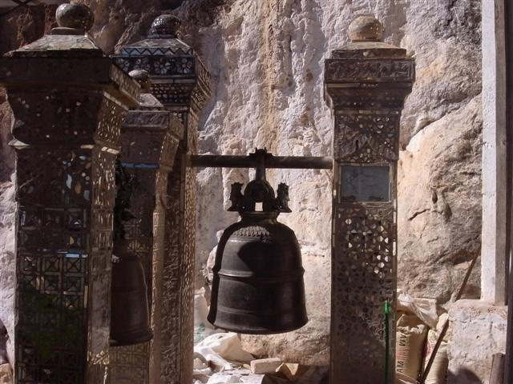
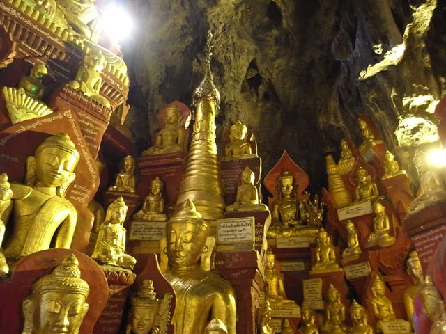
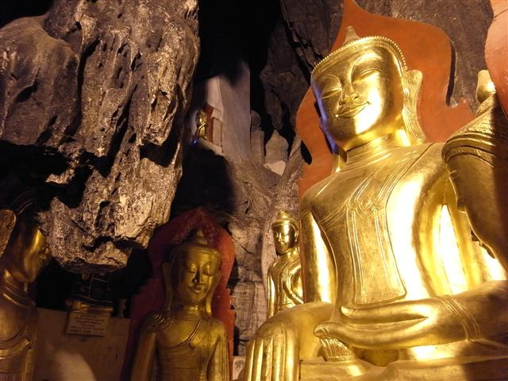
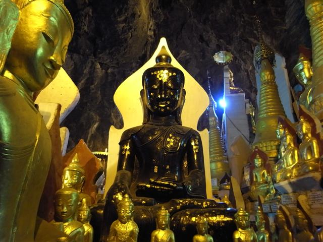
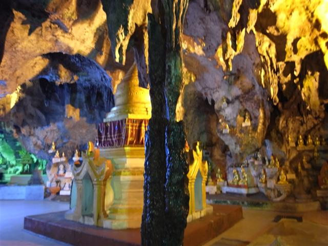
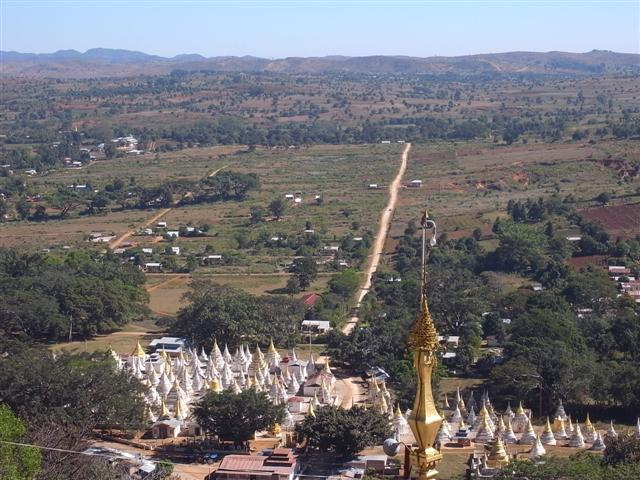
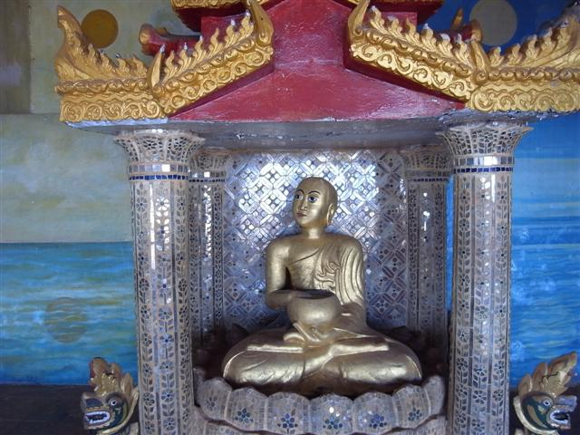
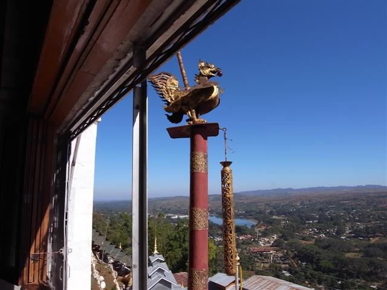
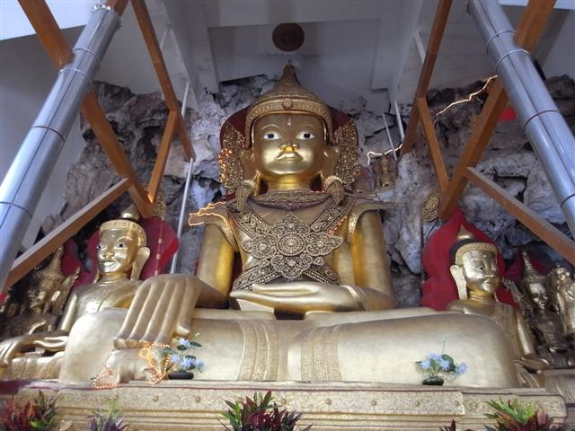
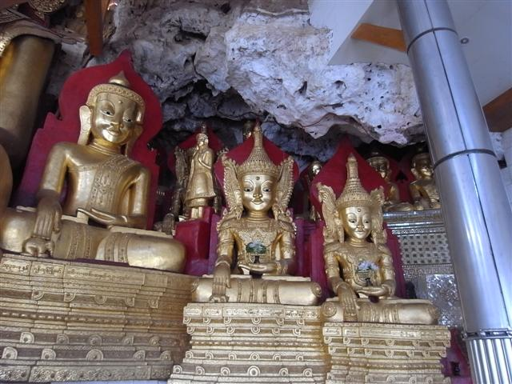
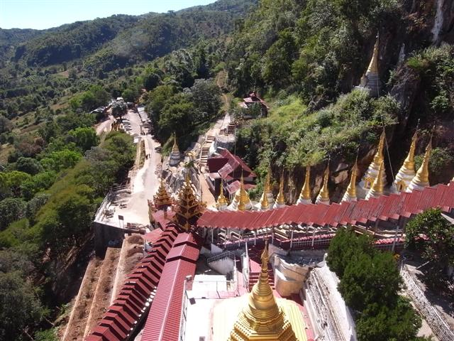
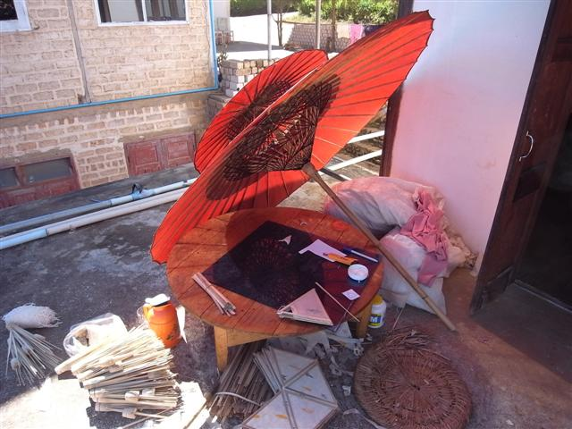
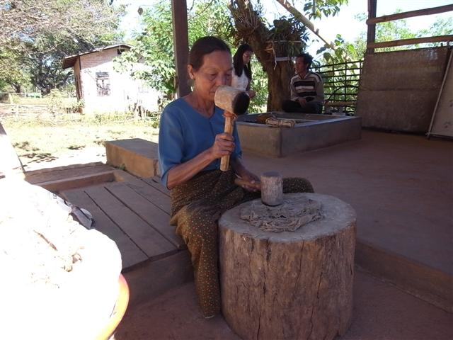
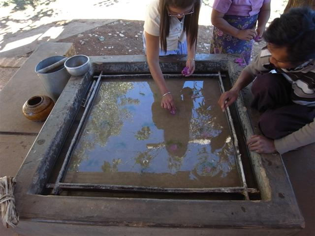
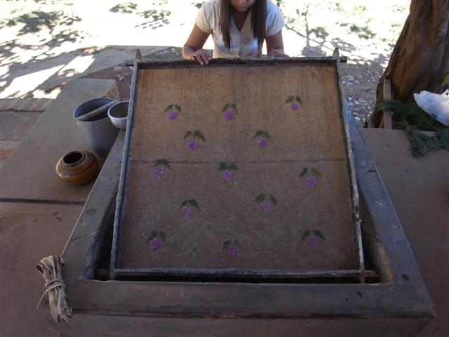
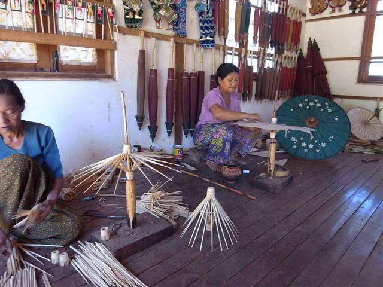
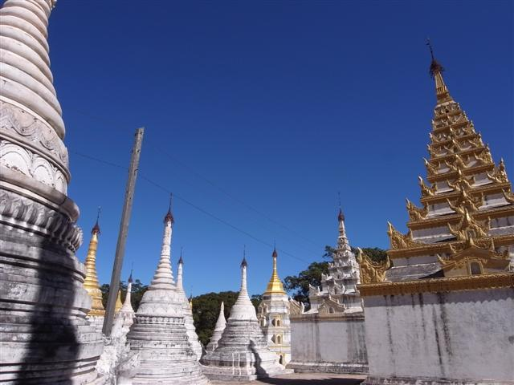
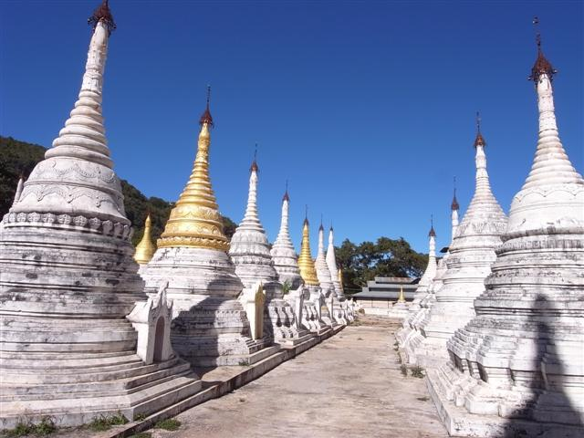
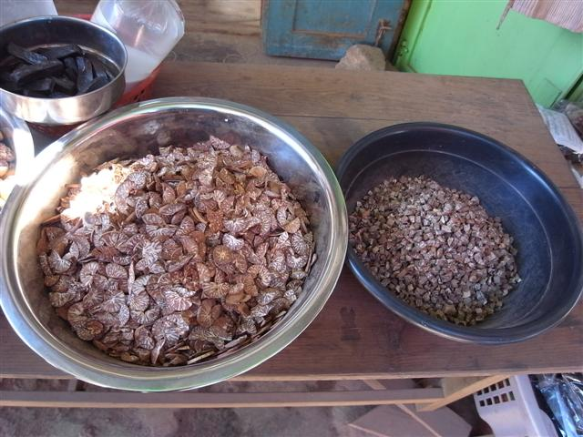
Betel Nut
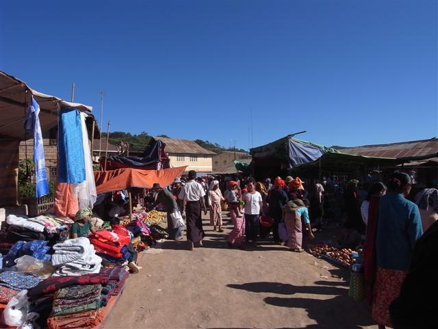
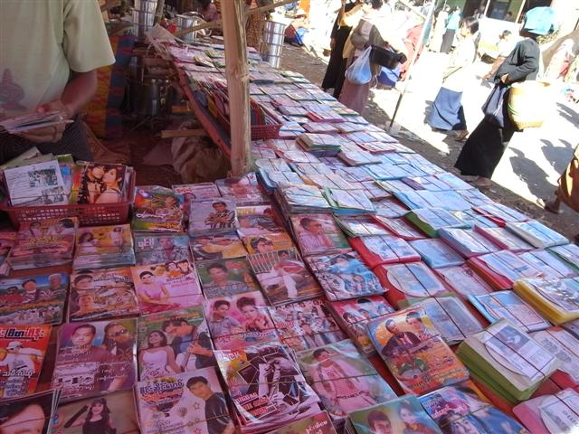
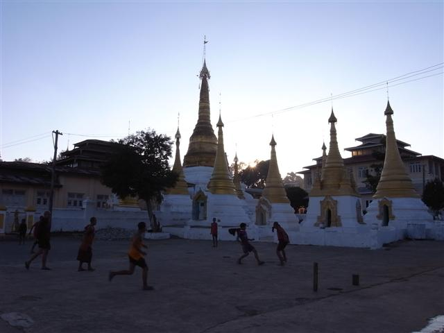
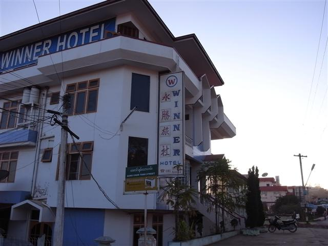
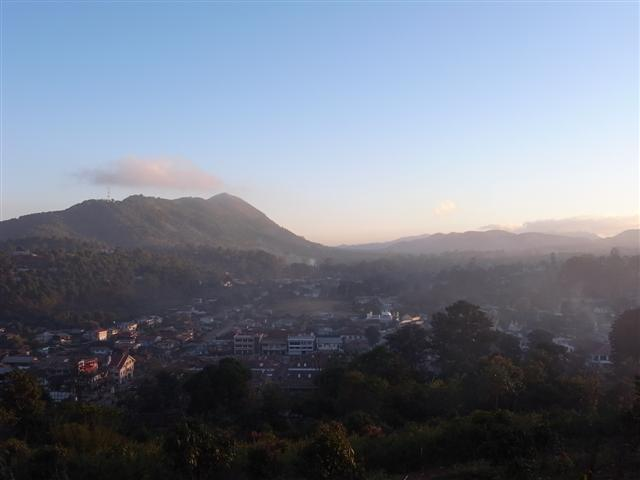
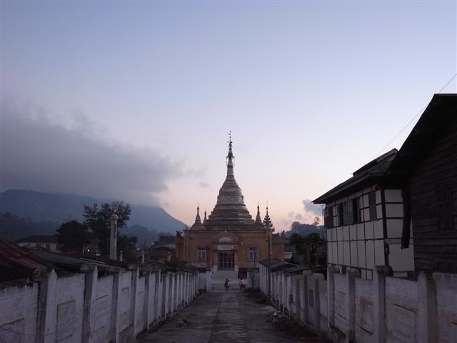
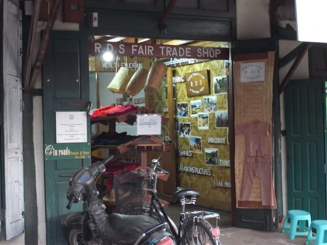